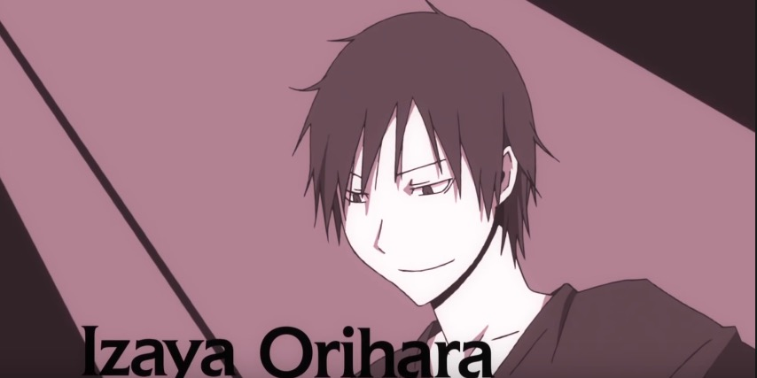

Story-telling
If you have watched Durarara!! And was asked by others what this anime is about, you will probably stuck for a moment.
Well, it’s really hard to conclude a theme for it!
If you just see a few episodes, it may be natural to believe that it is about the lives and friendships of three ordinary high school students,
or it’s about the Dullhan who lost her head trying to get it back.
These are all parts of the anime, but not all!
In fact, one special thing about Durarara!! is that there is no one always standing in the center of the stage.
Instead, everyone in Ikebukuro has his/her own story to tell.
A lot of parts of the story begins with flashbacks.
A puzzling scene or consequence is placed in front of you at the beginning,making you wondering what causes it.
And then the story goes on with interludes of different people, enriching their characters in the meantime.
Finally, at some point you figured out the whole story: instead of something directly cause a result,
multiple threads, with all their accidental or intentional act, leads to the result.
And even some tiny incidents that one may regard as useless could also be a clue for future story.
More interestingly, one cast is selected to play the story-telling role for an episode.
The cast is not the same. For example, in an episode featuring Masaomi Kida, the cast of Celty tells the story,
looking as if she is a bystander.


For the whole picture, people passing by are depicted differently from main characters in terms of color.
They are like a part of the background and are colored in gray. Instead of being a simplification for drawing,
this "colorless" and "colorful" carry actual meanings. Since it is better to left potential readers to explore it, I will not further explain it here.
Opening and Ending Style

- 


For someone who never watched Durarara!! but have viewed some derivative work of other animations,
they will probably be surprised that some of the styles come from Durarara!!.
Actually, Durarara!! employs some classic artistic styles in its opening and ending movies.
For example, with every opening movie, every character shows his/her name when the background is suddenly fixed and name written in white styled brushes(see the picture).
Since it is an ensemble cast with many characters, this opening is like an introduction where every one steps onto the stage.
However, it has to be noticed that this artistic form do not originates from Durarara!!.
For animation works, in Narita’s another light novel Baccao!, this form is also used when the work is transformed into an anime.